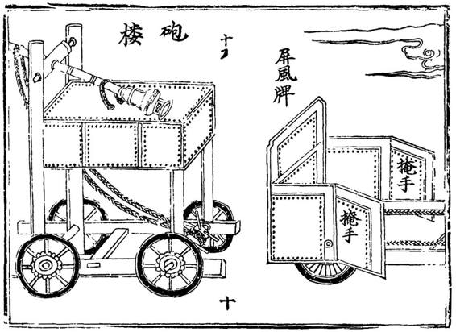

周王后来去了南方，甲申三月，他在抵达淮安后，薨于湖嘴舟中，虽然颠沛流离，却算是善终。
原知县王燮，二围后入京为监察御史，洪泛中他回到开封，组织救难工作，“数日救渡难民数万，沿途安设锅灶，煮粥以待。饥民得食，延甦甚众，汴人至今尸祝。”[45]
巡抚高名衡，以守城功加兵部右侍郎，但他推辞了，回沂水老家里居。我们不知他的推辞，是否因开封惨剧阴影太重。归里甫两月，同年十一月，清兵入侵山东，大杀掠，名衡痛不欲生，遂偕妻子殉国。他的自杀，很难说与开封经历无关。
总兵陈永福三围表现始终出色，“拒守尤坚”，然而“终降自成”，[46]其缘由及结局我们不得其详。
开封推官黄澍，是王燮离开后，亦即第三围过程中最勇任事的中层官员。难后，以守城功擢巡按御史，监军左良玉。他在乙酉左军兵变中为关键人物，多家记述称左良玉与马士英的水火不容，由他挑起，左军部将鼓噪东下，也是他煽风点火。左良玉九江暴亡之后，他随左子梦庚降清。
左良玉，不必说，他的名将生涯在开封一蹶不振。这同时也是明朝命运的一个象征。
另有一位间接人物，朱由崧。他父亲的自私、愚蠢，不单导致洛阳陷落、本人分尸，也为开封惨剧奠定一切基础。开封承受苦难时，福世子正作为难民流落河南各地。但两年后，根据礼法，却成为帝位继承人，从而成功地毁掉南京。
历史上发生的事，说起来并不复杂，都可以概括为作用力与反作用力。做过什么，就会有相应收获与回报。但这么简明的逻辑，并不能解释开封之围一类惨剧。李自成或其他反抗者，有充分理由向明王朝寻仇，但百万普通人民生命被裹其间，令人太息。辛巳、壬午开封之围给我个人的感想是：战争有正义、非正义之分，但无美丑之分。倘如不失理性，人类当尽所有努力避免战争；倘如战争不得不是人类的选项，至少也置于最后和最不可能的地方。

《武经总要》选图四•远程炮
制成高台，炮置其上，可有效提高射击角度、增加射程。开封之围中，明军、闯军双方，都采用了类似设施。
[1] 本文所用版本，为中州古籍出版社1987年出版之王兴亚点校本，简化起见，后面除直接引用段落外，不一一另注。
[2] 本文所用版本，系由中国历史研究社编入“中国历史研究资料丛书”《虎口余生记》、神州国光社1951年出版、上海书店1982年复印本，后除直接引用段落外，亦不一一另注。
[3] 李濂《汴京遗迹志》卷之一，中华书局，1999，第2页。
[4] 陈所蕴《增建敌楼碑记》，《祥符县志》卷九建置，乾隆四年刻本，第8页。
[5] 李濂《汴京遗迹志》卷之一，中华书局，1999，第4页。
[6] 陈所蕴《增建敌楼碑记》，《祥符县志》卷九建置，乾隆四年刻本，第8-10页。
[7] 洛阳陷落日期，除正月二十日外，有十九日、二十二日、二十五日诸说。
[8] 吴伟业《绥寇纪略》卷九，商务印书馆，民国二十六年，第179页。
[9] 郑廉《豫变纪略》卷四，浙江古籍出版社，1984，第73页。
[10] 同上。
[11] 同上，第75页。
[12] 同上。
[13] 吴伟业《绥寇纪略》卷九，商务印书馆，民国二十六年，第179页。
[14] 彭孙贻《平寇志》卷之四，崇祯十四年，上海古籍出版社，1984，第87页。
[15] 白愚《汴围湿襟录》，中国历史研究社编《虎口余生记》，上海书店，1982，第45页。
[16] 郑廉《豫变纪略》卷四，浙江古籍出版社，1984，第75页。
[17] 谈迁《国榷》卷一百，中华书局，2005，第6027页。
[18] 李光壂《守汴日志》，中州古籍出版社，1987，第1页。
[19] 白愚《汴围湿襟录》，中国历史研究社编《虎口余生记》，上海书店，1982，第52页。
[20] 谈迁《国榷》卷九十八，中华书局，2005，第5941页。
[21] 王世贞《弇山堂别集》卷六十七，台湾学生书局影印本，1965，第2853页。
[22] 秦佩珩《明代米价考》，《明清社会经济史论稿》，中州古籍出版社，1984，第199-210页。
[23] 谷应泰《明史纪事本末》卷七五中原群盗，广雅书局刻本，上海古籍出版社影印，1994，第331页。
[24] 刘益安《大梁守城记笺证》，中州书画出版社，1982，第53页。
[25] 同上，第44页。
[26] 白愚《汴围湿襟录》，中国历史研究社编《虎口余生记》，上海书店，1982，第51页。
[27] 郑廉《豫变纪略》卷四，浙江古籍出版社，1984，第98页。
[28] 李光壂《守汴日志》，中州古籍出版社，1987，第7页。
[29] 同上，第11页。
[30] 白愚《汴围湿襟录》，中国历史研究社编《虎口余生记》，上海书店，1982，第53页。
[31] 同上。
[32] 李光壂《守汴日志》，中州古籍出版社，1987，第9页。
[33] 白愚《汴围湿襟录》，中国历史研究社编《虎口余生记》，上海书店，1982，第55页。
[34] 白愚《汴围湿襟录》，中国历史研究社编《虎口余生记》，上海书店，1982，第57页。
[35] 李光壂《守汴日志》，中州古籍出版社，1987，第12页。
[36] 白愚《汴围湿襟录》，中国历史研究社编《虎口余生记》，上海书店，1982，第58页。
[37] 《肖华同志在围城政工会上关于围困封锁长春的政治工作报告提纲》，《长春党史资料》第一辑，长春市地方史志编纂委员会，1987年，第86-87页。
[38] 同上，第89页。
[39] 白愚《汴围湿襟录》，中国历史研究社编《虎口余生记》，上海书店，1982，第67-68页。
[40] 李光壂《守汴日志》，中州古籍出版社，1987，第28页。
[41] 李光壂《守汴日志》，中州古籍出版社，1987，第31页。
[42] 刘益安《大梁守城记笺证》，中州书画出版社，1982，第112页。
[43] 同上，第125页。
[44] 郑廉《豫变纪略》卷六，浙江古籍出版社，1984，第138页。
[45] 白愚《汴围湿襟录》，中国历史研究社编《虎口余生记》，上海书店，1982，第79页。
[46] 纪昀《四库全书总目提要》，《守汴日志》附录一，中州古籍出版社，1987，第42页。